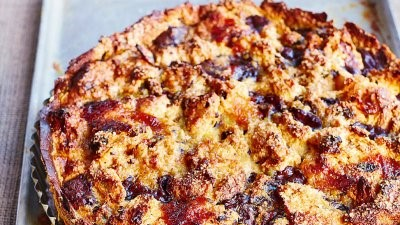

Bread & butter panettone pudding tart
We all know we love bread and butter pudding, but it's time for a change - this version is super-fun
Manhattan
This is an absolute classic. I make a big batch of this before a party, then pour into chilled martini glasses and garnish as the guests arrive. You don't need to make many though!
One-cup pancakes with blueberries
These are the simplest pancakes to make with kids. You don't even need scales to weigh out the ingredients - all you need is a cup or a mug!
Roasted marmalade ham
Cooking a ham the traditional way is so satisfying and perfect for a special Sunday lunch
Winter bombe
Get-ahead puddings are great. I make this frozen classic every year without fail. It looks amazing, is crazy delicious, and is a clever assembly job. It's a sort of cross between a summer pud and an Arctic roll, and it"s sure to wow.